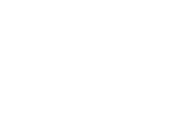

EV Group (EVG)
Semiconductor processWafer bonding, lithography & nanoimprint
Long-standing principal. In 2023, EVG and Dymek formed the joint venture EV Group Malaysia Dymek Sdn. Bhd. for installation, technical service, spare parts and process support.
Visit EV Group4D Technology
Metrology & inspectionDynamic interferometry & 3D surface metrology
Dynamic interferometers and optical surface metrology, including PhaseCam, AccuFiz, NanoCam and InSpec.
Visit 4D Technology3D-Micromac
Laser & micromachiningLaser micromachining & laser sample preparation
Laser micromachining and laser-based sample preparation systems. 3D-Micromac appointed Dymek as a trade agency in December 2025.
Visit 3D-MicromacIntegral Solutions International (ISI)
Test & yieldMRAM, magnetic sensor & data-storage test
Test systems for MRAM, magnetic sensors and data-storage devices, with sales and technical support through Dymek.
Visit Integral Solutions International
CVD Equipment Corporation
Semiconductor processCVD & thermal process equipment
Chemical vapour deposition and thermal process equipment, with sales and technical support through Dymek.
Visit CVD Equipment CorporationKLA (formerly Filmetrics)
Metrology & inspectionThin-film thickness measurement
Thin-film measurement systems such as the F20, F40 and F54 have been offered through Dymek.
Visit KLAYield management & manufacturing analytics
yieldWerx and Dymek announced a strategic partnership to support semiconductor yield management.
Visit yieldWerxOpto-Alignment
Optics & alignmentLens centration, optical alignment & assembly
Systems for centring, aligning and bonding lenses and optical assemblies, used by precision optics, camera-module and photonics manufacturers.
Visit Opto-AlignmentThermo Fisher Scientific (formerly FEI)
Metrology & inspectionElectron microscopy & failure analysis
SEM, TEM and DualBeam (FIB-SEM) systems, formerly FEI, for materials characterisation, sample preparation and semiconductor failure analysis.
Visit Thermo Fisher ScientificThetaMetrisis
Metrology & inspectionThin-film thickness & optical properties
White-light reflectance spectroscopy tools for fast, non-contact measurement of thin-film thickness and optical constants, from R&D to inline use.
Visit ThetaMetrisisBeneq
Semiconductor processAtomic layer deposition (ALD)
ALD equipment for research, pilot and production use, depositing highly uniform, conformal thin films for semiconductors, optics and power devices.
Visit BeneqSonix
Metrology & inspectionScanning acoustic microscopy
Scanning acoustic microscopes that find voids, delamination and cracks inside packages, bonded wafers and assemblies without damaging them.
Visit SonixKLA (formerly MicroSense)
Metrology & inspectionCapacitive sensing & magnetic metrology
Non-contact capacitive displacement sensing, wafer geometry measurement and magnetometers for magnetic materials and data-storage applications. The MicroSense line is now part of KLA.
Visit KLACubeFabs (formerly Nanotronics)
Metrology & inspectionAI-driven automated optical inspection
Automated optical inspection combining advanced microscopy with machine learning to detect and classify defects on wafers and devices.
Visit CubeFabs